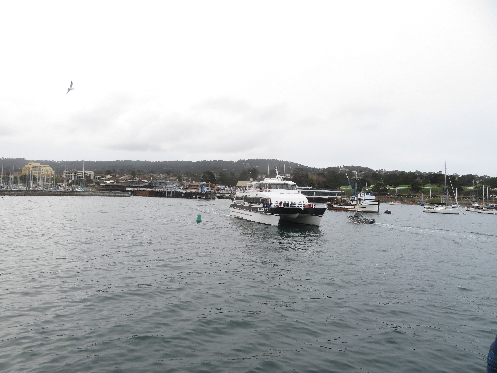

Monterey Bay in the central coast of California is a haven for aquatic wildlife, with plenty of diverse creatures calling the bay and its surroundings home. I took a whale watching/wildlife tour from Monterey and was certainly in awe at how much wildlife there was here.
Among the many wildlife seen in Monterey, Sea Otters (Top Left, top center) were by far my favorite as they were just adorable. On the tour, I got to see many Sea Otters, some with their pups, hanging out in the bay, certainly the cutest wildlife found in Monterey. Some other notable aquatic mammals include Harbor Seals at Elkhorn Slough (Bottom Left, Bottom center), just chilling and relaxing comfortably on the shores of the bay, as well as tons of California sea lions (Top right, bottom right), which were literally everywhere in Monterey Bay and so cool to watch.


On the whale watching tour, I got to spot a pod of Risso's dolphins (left) as well as a Humpback whale and her calf (center, right), which the tour spent over an hour with. The amount of diverse aquatic wildlife here is just astonishing and indisbutably the #1 highlight of Monterey Bay.